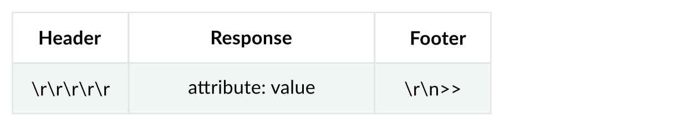

Development¶
Response Format¶

FIR Filter Coefficients File¶
FIR filter coefficients file could be generated with AD9361 Filter Design Wizard in MATLAB.
fir_coef file_name
file_name (string): filter file name with.ftrextension. Filter file is saved under path/etc/pna_iio/*.ftrbut file name does not include path.
Exit¶
exit